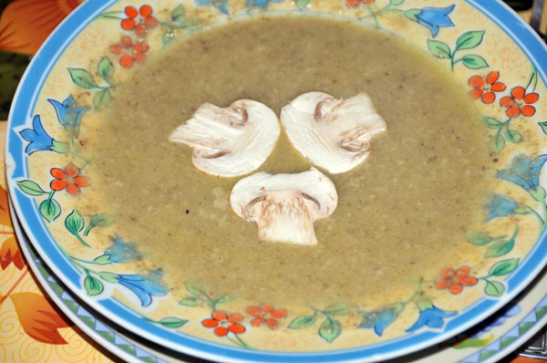

Krem z pieczarek

Oczyszczone pieczarki (0,5kg) i obraną, podzieloną na części cebulę siekamy najdrobniej jak można. Wkładamy na patelnię, na roztopione masło i dusimy, często mieszając, by nie dopuścić do zrumienienia. Gdy pieczarki będą miękkie, miksujemy je za pomocą blendera, a następnie łączymy z przygotowanym zawczasu rosołem i na średnim ogniu gotujemy przez około 3 minuty. Dodajemy łyżkę mąki ziemniaczanej rozprowadzoną w zimnym mleku, mieszamy, jeszcze raz zagotowujemy. Trzymamy na ogniu przez 3 minuty, by mąka straciła smak surowizny. Doprawiamy do smaku. Po zdjęciu z ognia łączymy z lekko spienioną śmietaną lub nie, gorącą zupę rozlewamy do miseczek, podajemy z kruchymi paluszkami lub bez.